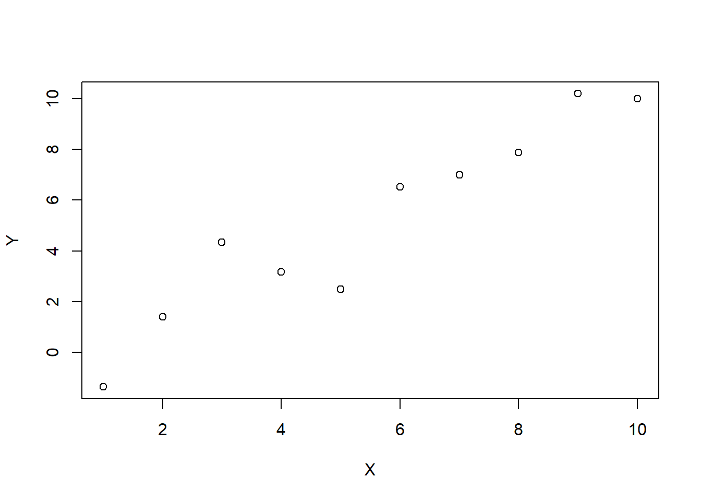

![]()
m <- sigma <- 1 # True parameters
x <- 1:10 # x covariate, assumed fixedPrologue
A few months back, for undocumented circumstances, my browser’s search history was full of terms like “parameter estimation with variable selection”, or “confidence intervals after cross-validation”, or again “linear model uncertainties after staring into the abyss”, …
Sparing you my rock bottom, I eventually stumbled upon the right keywords, and started digging into the mathematical aspects of Selective Inference, or Post-Model Selection Inference. Now, while my hands are still full of dirt, I’ve decided it’s the right moment to write some notes about what I’ve learned - whose main recipient is the future me, which will otherwise inevitably forget what the present me thinks he knows. If you’re not the future me:
- Welcome 👋
- If you have detected some imprecision, or have suggestions for this or the next posts, you are more than welcome to create an issue on the source repository of this blog.
Introduction
Broadly speaking, the problem of Selective Inference is that of performing valid statistical inferences when the actual questions of the data analysis are not fixed in advance, but rather selected through data examination. In model-based inference, this lack of pre-determination usually stems from the (often unavoidable) practice of using the same data to choose an adequate model for the data generating process and to perform inference. The intrinsic randomness of the selection process has important consequences on the probability of making different guesses about the selected questions, which, if not properly taken into account, can completely invalidate the analysis results.
If this sounds unfamiliar, think about machine-learning: when training a predictive model on a given dataset, you would usually consider the error on the same dataset as a poor (optimistic) estimate of the true model’s error rate, because the model was tuned to perform well on that data in the first place. There we go, Selective Inference! A selection from an extended family of models1 is performed through data examination, and this event introduces a bias in the error estimate of the final model from training data.
The example from machine-learning also suggests a very simple-minded and relatively a-theoretical approach to Selective Inference: data-splitting2. According to this method, we would use only part of the available data to select the questions to be answered by the analysis, while the remaining part would be reserved to perform the actual inference. For this program to succeed, there are however two important requirements: first, we must have enough data to ensure decent statistics for both the selection and inference tasks; and second, we must be able to split data in two independent (or close to independent) sets. This can suppose problems with, e.g., time-series data. If, on the other hand, these requirements cannot be met, we have to resort to more sophisticated methods.
At this point, I would like to stress that the conceptual problems I’ve just pointed out will probably look obvious to any reader with a decent intuition for probability3. What is less obvious, but in fact a fairly active research field in statistics, is how to perform valid selective inferences when the “easy” solution of data-splitting I mentioned above is not available. This is where theory re-enters the game, and what I’m going to ramble about in this and the next posts.
Illustrations of Selective Inference
Enough for the speech, let us see how selection can affect (and invalidate) classical inference with a simple-minded simulation.
Setting
To illustrate why naive classical inference can fail in the presence of selection, we consider a very simple regression problem involving a single regressor \(X\) and a response \(Y\), where all the assumptions of the classical linear model hold. In fact, we will assume the true data generating process to be:
\[ Y = mX + \varepsilon, \qquad \varepsilon \sim \mathcal N (0, \sigma), \tag{1}\]
where \(\varepsilon \sim \mathcal N (0, \sigma)\) means “\(\varepsilon\) follows a gaussian distribution with mean \(0\) and standard deviation \(\sigma\)”.
A selective modeling procedure
Now, suppose we are given a dataset of \(N\) independent observations \((y_i, x_i)_{i = 1, \,2,\, \dots,\,N}\), and we would like to study the dependence of \(Y\) from \(X\). Of course we don’t know the true law, Equation 1, but by a stroke of luck (or by a Taylor expansion argument) we make the correct initial guess that such dependence is linear in \(X\). We are, however, unsure whether it would be appropriate to also include an intercept term in the fit. We thus establish the following selective modeling procedure:
- Fit a linear model with intercept term, \(Y = mX + q + \varepsilon\).
- Stop if the intercept estimate is significantly different from zero (say, at the level of 1-\(\sigma\), \(p\text{-value}<32\%\)). Otherwise:
- Fit a model with no intercept, \(Y = mX + \varepsilon\).
Finally, we use the last fitted model to construct a “naive 95%” confidence interval \((\hat m_-, \hat m_+)\) for the slope \(m\). This is defined by:
\[ \hat m_\pm = \hat m\pm t_{0.975, \,N-d} \cdot \hat \sigma _\hat m\qquad (95\%\,\text {C.L.}). \tag{2}\]
Here \(t_{0.975,\, N-d}\) is the 97.5%-quantile of the \(t\)-student distribution with \(N-d\) degrees of freedom, and \(d\) is the number of estimated parameters, (\(2\) or \(1\), according to where we stopped in the modeling procedure). \(\hat m\) and \(\hat \sigma _{\hat m}\) are the Ordinary Least Squares (OLS) estimates of the slope and its standard deviation, respectively. These are the classical confidence intervals reported by the lm() function in R.
At a first glance, this procedure might look reasonable. After all, both intervals we may end up constructing do have a genuine 95% coverage probability, when constructed unconditionally… and by selecting the “best” model we’re supposedly choosing the “best” confidence interval. In spite of this qualitative argument, we inquire:
… does it work?
Now, the question is: how often do the naive CIs Equation 2 cover the true parameter \(m\) of Equation 1? The answer better be “at least 95% of the times” for our confidence claim in Equation 2 to be valid!
We can check the actual coverage of Equation 2 through a simulation. Here I’ll assume \(m = \sigma = 1\), and that the dataset consists of \(N=10\) independent observations of \(Y\) at fixed points \(X = (1, \,2, \,\dots ,\, 10)\).
The following function generates observations of \(Y\) according to the distribution Equation 1:
generate_y <- function(x, m, sigma) {
eps <- rnorm(length(x), mean = 0, sd = sigma)
return(m * x + eps)
}For example:
set.seed(840)
plot(x, generate_y(x, m, sigma), xlab = "X", ylab = "Y")
Below we generate \(B=10^4\) such \((X,Y)\) datasets, for each of which we fit a linear model according to the procedure specified above, and check how many times the true slope \(m = 1\) falls in the confidence interval defined by Equation 2.
# Simulation parameters
B <- 1e4 # Number of replications
# Preallocate logical vectors to be assigned for each replica - for efficiency.
q_dropped <- logical(B) # Was the intercept term 'q' dropped?
m_covered <- logical(B) # Was the true parameter 'm' covered?
# Set seed for reproducibility
set.seed(841)
# Logging
time_start <- Sys.time()
# Start the simulation
for (b in 1:B) {
y <- generate_y(x, m, sigma)
# Fit full model (including intercept 'q')
fit <- lm(y ~ x + 1)
q_pval <- summary(fit)$coefficients[1, 4]
# Is 'q' term "significant"? If not, drop 'q' and fit a simpler model
if (q_pval > 0.32) {
q_dropped[[b]] <- TRUE
fit <- lm(y ~ x - 1)
} else {
q_dropped[[b]] <- FALSE
}
# Construct CI for 'm', using the selected model's fit
m_ci <- confint(fit, 'x', level = 0.95)
m_covered[[b]] <- m_ci[[1]] < m && m < m_ci[[2]]
}
time_end <- Sys.time()
cat("Done :) Took ", as.numeric(time_end - time_start), " seconds.")Done :) Took 13.97569 seconds.The variable m_covered[[b]] is TRUE if the slope \(m\) fell in the naive CI \((m_-, m_+)\) defined by Equation 2 in the b-th replica of the simulation. Hence, the actual coverage fraction of the CI is given by:
mean(m_covered) # Actual coverage of naive "95%" CIs.[1] 0.917292%! If this difference from the nominal 95% coverage guarantee does not strike you as enormous, think about it in these terms: the naive CIs Equation 2 fail to cover the true parameter about 8% of the times; This is a relative +60% of failures with respect to an honest 95% CI.
What’s going on
We can understand a bit better what’s happening here by decomposing the coverage probability as follows:
\[ \text {Pr}(m \in \text{CI}) = \text {Pr}(m \in \text{CI}_{q \text{ dropped}}\,\vert\,q \text{ dropped})\cdot \text {Pr}(q \text{ dropped}) +\newline +\text {Pr}(m \in \text{CI}_{q \text{ kept}}\,\vert\,q \text{ kept})\cdot \text {Pr}(q \text{ kept}) \tag{3}\]
The right hand side of this equation shows how our selective modeling procedure alters the probability \(\text{Pr}(m\in \text{CI})\). There are two contributing factors here: the probability of dropping the intercept term, and the covering probabilities of the CIs constructed in the two cases (\(\text{CI}_{q \text{ dropped}}\) and \(\text{CI}_{q \text{ kept}}\)). We can estimate all these probabilities as:
mean(q_dropped) # Pr(q dropped)[1] 0.6782mean(m_covered[q_dropped]) # Pr(m covered | q dropped)[1] 0.9510469mean(m_covered[!q_dropped]) # Pr(m covered | q kept)[1] 0.845867The first result directly follows from our procedure, which uses a hypothesis test with significance \(\alpha = 32\%\) to test the (true) null hypothesis \(q = 0\). It is a bit harder but in fact possible to prove that4 \(\text {Pr}(m \in \text{CI}_{q \text{ dropped}}\,\vert\,q \text{ dropped}) = 95\%\), as the second estimate would seem to suggest. The third result is finally what invalidates the naive coverage guarantee in Equation 2.
Concluding Remarks
To summarize:
- We started with two linear models for \(Y\) vs. \(X\), which were in fact both well-specified (that is, correct).
- We stipulated to choose one of the two models by testing the null hypothesis \(q = 0\).
- After selection, we constructed \(95\%\) confidence intervals for the slope \(\hat m\) using the selected model, as if this had been fixed in advance.
- A simulation shows that such intervals have a true coverage probability of \(\approx 92\%\).
The mathematical explanation of the last result is provided by Equation 3, while the (hopefully) plain English one in the introductory part of this post. I will conclude with a few parenthetical remarks.
First, the selective procedure proposed here would likely hardly be applied in practice in such a simple situation5. However, one could easily think of a more complex scenario with multiple covariates, where eliminating redundant ones could turn out to be beneficial for interpretation (if not compulsory, if the number of covariates exceeds the sample size).
Second, in order to avoid cluttering the discussion with too much technicalities, I have deliberately chosen a quite special point in true-model space (\(q = 0\)). This implies that both fits with and without intercept estimate the same slope \(m\); this is a peculiar property of \(q = 0\), which would not be true in the general case \(q \in \mathbb R\). In general, we would have to carefully define the inferential targets for the \(q=0\) and \(q \in \mathbb R\) cases, in a differential manner.
Conclusion
That was all for today. In the next post, I will discuss some mathematical details regarding the formulation of the Selective Inference problem in model-building. For those surviving down to the bottom of the funnel, my future plan is to review some (valid) selective inference methods I found interesting, including:
- Benjamini-Yekutieli control of False Coverage Rate (Benjamini and Yekutieli 2005),
- POSI bounds for marginal coverage (Berk et al. 2013),
- Data Fission, an elegant generalization of good old data splitting (Leiner et al. 2021).
- …whatever cool stuff I may discover in the meantime.
Ciao!
References
Benjamini, Yoav, and Daniel Yekutieli. 2005. “False Discovery Rate–Adjusted Multiple Confidence Intervals for Selected Parameters.” Journal of the American Statistical Association 100 (469): 71–81.
Berk, Richard, Lawrence Brown, Andreas Buja, Kai Zhang, and Linda Zhao. 2013. “Valid Post-Selection Inference.” The Annals of Statistics, 802–37.
Isidori, Gino, Davide Lancierini, Patrick Owen, and Nicola Serra. 2021. “On the Significance of New Physics in b→ Sℓ+ ℓ- Decays.” Physics Letters B 822: 136644.
Leiner, James, Boyan Duan, Larry Wasserman, and Aaditya Ramdas. 2021. “Data Fission: Splitting a Single Data Point.” arXiv. https://doi.org/10.48550/ARXIV.2112.11079.
Shalizi, C. R. 2020. “Post-Model-Selection Inference.” 2020. http://bactra.org/notebooks/post-model-selection-inference.html.
Vrbik, Jan. 2020. “Regression Analysis (Lecture Notes).” 2020. http://spartan.ac.brocku.ca/~jvrbik/MATH3P82/notes.pdf.
Footnotes
Here, in the “extended family of models”, I’m also implicitly accounting for the multiplicity introduced by continuous model parameters and training parameters (also known as hyper-parameters).↩︎
The preferential method according to (Shalizi 2020), from which I borrowed the “a-theoretical” description, and which I recommend as a starting point for literature review.↩︎
This is not to say that correctly accounting for Selective Inference is the default in scientific practice. A relevant example from the field I come from (Particle Physics), is documented in this stimulating reference: (Isidori et al. 2021).↩︎
I’m always amazed by the great deal of theory one can learn by running a dumb simulation, and trying to explain a posteriori what seems to be a too perfect result. Technically, this follows from the fact that the slope estimate \(\hat m\) and residual sum of squares \(\text{RSS}\) of the reduced model, and the \(F\)-statistic used to test \(q = 0\), are all independent random variables under the same null hypothesis, here true by construction. All these facts are in turn consequences of general theorems from linear model theory, see for example (Vrbik 2020, chap. 4)… and, to be sure, it took me more than a single night without sleep to figure all this out.↩︎
And I’m actually not sure that, after properly taking into account Selective Inference, it would lead to a substantial gain in estimation accuracy, compared to simply fitting the possibly redundant model with intercept.↩︎
Reuse
Citation
BibTeX citation:
@online{gherardi2022,
author = {Gherardi, Valerio},
title = {How to Get Away with Selection. {Part} {I:} {Introduction}},
date = {2022-11-14},
url = {https://vgherard.github.io/posts/2022-10-18-posi/},
langid = {en}
}
For attribution, please cite this work as:
Gherardi, Valerio. 2022. “How to Get Away with Selection. Part I:
Introduction.” November 14, 2022. https://vgherard.github.io/posts/2022-10-18-posi/.